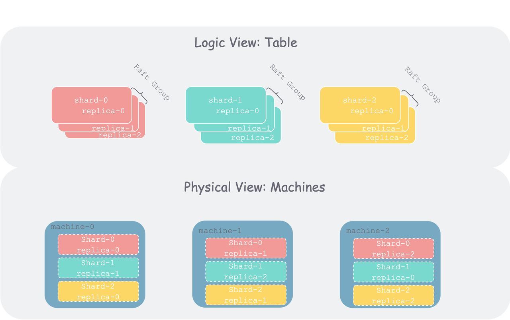
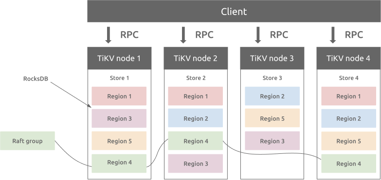
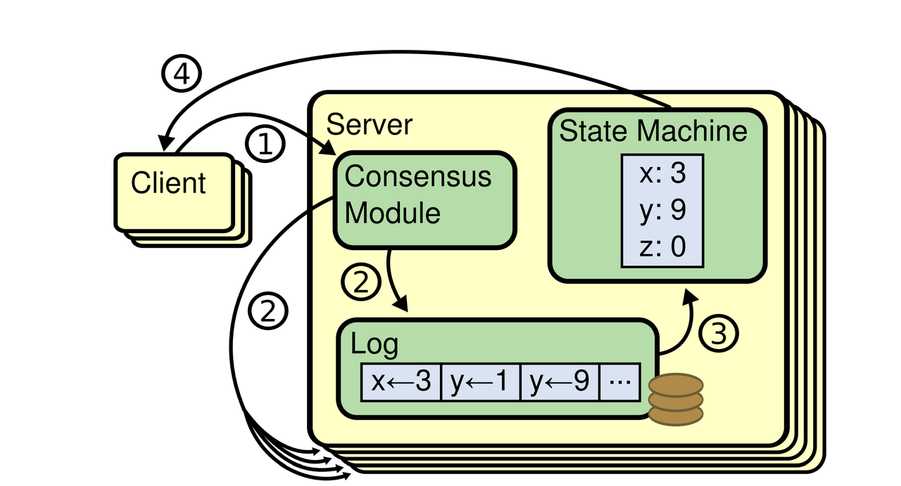
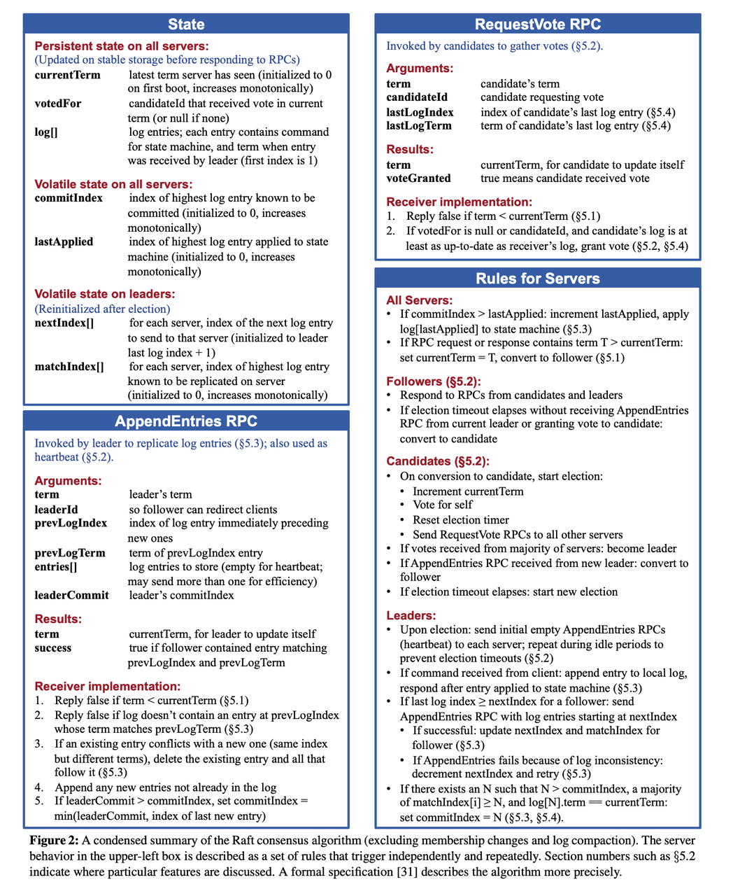
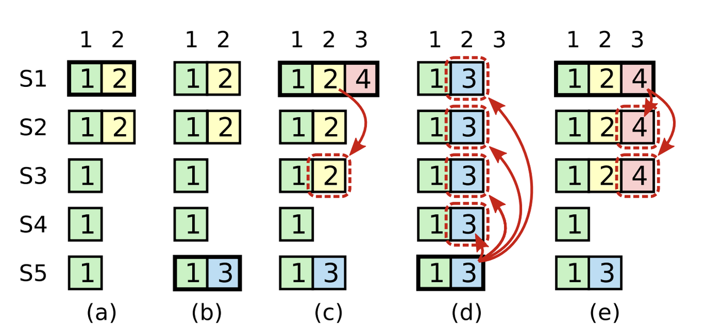

01. Raft 论文解读
从零实现 KV 和分布式 KV 有什么区别？
在学习本节之前，最好先自己看一遍 Raft Paper。如果英语不好，可以在网上搜翻译版来看。
使用场景
Raft 本质上是一种共识算法（consensus algorithm）。为什么要使用共识算法呢？什么场景下要使用共识算法呢？为什么共识算法逐渐成为了分布式系统的基石呢？
让我们来试着理一下内在逻辑：随着数字化的发展，当数据集（比如数据库中的一个 table）随着业务的增长，膨胀到一定地步之后，单机不再能存得下。因此需要将该数据集以某种方式切分成多个分片（Shard，也有地方称为 Partition、Region 等等）。分片之后，就可以将单个数据集分散到多个机器上。但是随着集群使用的机器数增多，整个集群范围内，单个机器的故障（各种软硬件、运维故障）概率就会增大。为了容忍机器故障、保证每个分片时时可用（可用性），我们通常会将分片冗余多份存在多个机器上，每个冗余称为一个副本（replication）。但如果分片持续有写入进来，从属于该分片的多个副本，由于机器故障、网络问题，就可能会出现数据不一致的问题。为了保证多副本间的数据一致性，我们引入了共识算法。

而我们要实现的 Raft 就是工业界当前一个主流共识算法，另一个是 Paxos。
基本原理
Raft 会将客户端请求序列化成操作序列，称为操作日志（operation log），继而会确保 Raft 的所有服务器（Server）会看到相同的日志。其中，每个 Raft Server 是一个进程，在工程中会各自在独立机器上，但课程中为了方便测试，会将其在单机上使用多线程模拟。Raft Server，也可称为 Raft Instance、Raft Peer，都是说的一个概念。
在工程实践中，通常一个 Raft Server 会包含多个数据分片的状态机（对应上文说的数据分片的一个副本），不同机器上从属于一个数据分片的副本联合起来组成一个 Raft Group，这样一个集群中就会存在多个 Raft Group。如 TiKV 的架构（他们的数据分片叫 Region）：

但在本课程 Raft 部分中，我们只考虑最简单情况：一个 Raft Server 中只包含一个状态机。在后面 ShardKV 部分中，会扩展到类似 TiKV 的架构。
所有 Raft Server 初始状态为空，然后回按照按相同的顺序执行相同的客户端请求，进而保证状态机是一致的。如果某个 Raft Server 宕机重启后，进度落下了，Raft 算法会负责将其日志进行追平。只要有超过半数的 Peer 存活并且可以互相通信，Raft 就可以继续正常运行。如果当前没有多数派存活，则 Raft 将会陷入停滞，不能继续接受客户端来的请求。不过，一旦多数 Peer 重新可以互通，Raft 就又可以继续工作。
这里面涉及几个核心概念角色：
- 客户端（Client）：Raft 的客户端，会向 Raft 发送写请求。
- 服务器（Raft Server，也称为 Raft Instance 或 Raft Peer）：组成 Raft 集群的单个进程。
- 状态机（State Machine）：每个 Raft Server 中会有一个本地的状态机。所谓状态机，在本课程里，可以理解为一个小型的 KV 存储。客户端的读取请求，都会直接打到状态机中。
三者关系可以参照论文中的图：

图中的四个步骤含义如下：
- 写入：客户端向 Raft 发送写请求，写入数据
- 同步：Raft 模块将请求序列化为日志，然后：
- 写入 Raft Server 本地 log
- 同步到其他 Raft 实例
- 应用：每个实例会将 Raft Log 各自应用到状态机
- 读取：客户端向状态机发送读请求，读取之前写入（状态机中）的数据
其中为什么要以日志作为中间载体来维持一致性呢，可以看看 Kafka 创始人的一篇文章。
实现概要
在本课程中，我们将使用 Go 来实现 Raft —— 将每个 Raft 实例组织为一个 Go 的 struct，每个 Raft 实例在逻辑上会维护一个无限的操作序列（commands sequence），每个操作都有下标（从 1 开始的自增下标）。该下标类似于 TCP 中的序号，是我们在多机对操作序列达成共识的重要设计。每个操作也称为日志条目（log entry），一旦日志条目在多机达成共识，我们就可以对其进行提交（commit）。只有提交之后的日志，才能够被应用（apply）到状态机。
我们之后在进行实现时，要反复研读 Raft 扩展论文，尤其是下面列出的图 2。该图在代码级别定义了我们所需要的数据结构和每个 RPC 的行为细节。论文中提到的大部分功能我们都会实现：领导选举、日志同步、宕机恢复、日志压缩。

配置变更（config changes）是指 Raft 中 Server 个数动态的增删，通常用于多个 Raft Group 的分裂和合并（通常用于 Partition 的分裂与合并），因此实现了配置变更的 Raft 通常也称为 Multi-Raft。此部分较为复杂，我们本课程中不做实现。
在铺垫了基本概念之后，接下来我们来梳理下 Raft 算法细节。
相比 Paxos，Raft 的一大特色就是算法拆成了相对正交的几个部分——领导者选举、日志同步、状态持久化、日志压缩和配置变更。你如果对课程照目录看下就能看出来，除却最后一部分，这些模块就是我们课程 PartA ~ PartD 要分别实现的内容。将算法正交化拆分的好处是，让每个模块相对内聚，使得整体更易理解和实现——这也是 Raft 算法设计的初衷。
下面我不打算采用精确的方式来讲解每个模块——那是论文正文和代码实现要做的事情。相反，本章我将带领大家在感性上建立一个对 Raft 基本概念（任期、选举）和两大流程（领导选举、日志同步）的认识。带着这个感性认识，大家可以再去仔细研读论文，想必能事半功倍地梳理出 Raft 算法中海量的细节。
任期
任期（term）在任何共识协议中都很重要。Raft 中所有关键事件的展开，都是基于任期的，任期最直观的理解就是领导者任期，如“总统任期”。
但其本质上是一种关于时间隐喻，可以理解为“纪元”——如桃花源中的村民“不知有汉，无论魏晋”的那种朝代纪元。与桃花源村民相似，在 Raft 中，如果出现网络分区，某些 Peer 被隔绝，也很容易不知道其他 Peer 到了哪个 Term。一段时间后，被隔绝分区中的 Peer 与其他 Peer 重新建立通信（武陵人发现了他们）时，首先要做的就是对齐 Term，这是之后一切沟通展开的基础。
从另外一个角度讲，任期还是一种优先级或者权力的隐喻：
- 低任期的 Peer 收到高任期的 Peer 任何信息后，会自动“跟上”（Follow）任期变成跟随者（Follower）。
- 高任期的 Peer 收到低任期 Peer 的任何请求时，会直接拒绝。
在所有 Peer 进行“交流”（RPC 通信）时，任期都是第一优先级的，只有对齐了任期，才有谈其他的基础。
领导选举
Raft 使用的是“强人模式”，即只要 Leader 当选，他就对其任期内日志长啥样有说一不二的权力。Raft 中也采取“一山不容二虎”策略——一个任期内最多有一个 Leader（也可以没有选出）。但在同一时刻，可能会存在多个 Leader，但，他们一定处于不同任期中。
由于采用强人策略，则在选举时就要慎之又慎——以期能选出能“顾全大局”的人（具备所有已提交日志的候选者）。为此，每个 Peer 在投票时，都要比比谁的日志“更新更全”。一旦跟随者投出其票，就表示对该候选者心悦诚服——“承诺”一段时间内不会再发起选举（重置选举时钟）。
Leader 在当选后，要做的第一件事就是“昭告天下”（心跳）以“压制”其他“试图挑战权威”的人——“迫使”每个 Follower 承诺一段时间内不得再发起选举。Follower 在收到心跳后，只要任期不比人家大，就要乖乖给出“承诺”（重置选举时钟）。
之后，Leader 便会周期性的发送“政令”，直到收到来自高“任期”的消息，便要乖乖“交权”，让出领导权。从这里也可以看出，任期是第一优先级，这是“时间法则”的攻击，Leader 也不能免疫。当然，还有一种优化，就是 Leader 发现自己成为“孤家寡人”（发现大部分人不应答“政令”了，通常出现在 Leader 与多数 Follower 发生了网络隔离时）后，也自动交权。
日志同步
Leader 在接收到“甲方”（客户端）的“请求”后，会将其包装为“政令”（日志），然后“附带”到周期性的广播（心跳）上，将“政令灌输”给每个 Follower。最简单粗暴的方式，就是将本地所有日志一股脑的附带到心跳上，Follower 收到后，直接替换本地日志即可。但如果 Leader 日志量很大，通信代价将会非常高。因此 Leader 采用一种“乐观+回撤”的方式进行同步：
- 乐观：一开始心跳不附带任何日志，只带一些“暗号”过去。假如 Follower 的通过“暗号”发现自己日志跟 Leader 完全一致，就直接回：一致，之后的心跳不需附加任何日志。
- 回撤：如果 Follower 通过“暗号”发现自己和 Leader 日志并不一致，也会告诉 Leader——下次得附带日志。则 Leader 就附加一些末尾的日志，如果发现还是不一致，就要继续回撤，多向前附加一些日志，同时更新“暗号”，直到收到 Follower 肯定回复，则继续恢复不附加任何日志的心跳。
这个“暗号”，就是 Leader 所附带日志的的前一条日志信息的二元组：<下标，任期>。如果心跳没有附加任何日志，则暗号就是 Leader 最后一条日志的相关信息。为了保证 Leader 附带日志总有前一条日志，我们在对日志进行初始化的时候，会在开头放一条“空日志”，从而避免一些边界判断（这个做法类似带头结点的链表）。
那为什么只要“暗号”对的上，就能保证两方日志前缀一致呢？
简单来说，对“暗号”的过程，就是一个递推的过程。根据数学归纳法，每次附加新日志，都要对齐前序日志。而由任期单调递增、单任期最多一个 Leader，则同任期的日志前缀一定对得上。这样一来，同任期前缀对的上，跨任期同步前都会对齐前任日志，则“政令畅通”的情况下，所有日志最终都会收敛为 Leader 日志。
在“政令”（日志）同步到大多数节点后，Leader 就会宣布该政令“生效”（提交）。但论文特别强调了，Leader 不能直接宣布前任的“政令”生效，而要在本任期内发布“政令”后，通过“生效”本任期“政令”来间接“追认”前序任期的相关“政令”。这是为什么呢？（下图是 Raft 中大名鼎鼎的一张图“Figure 8”，很多实现 Raft 的同学应该都被该图虐过。）

这是由于我们选举时会通过比最后一条日志的“大小”来决定是否 Leader 当选，因此前任的日志，如果没有通过本任期“盖棺定论”，是有可能被其他在相同下标具有更新日志的 Peer 当选 Leader 后“冲掉的”，也就是上图 c、d、e 的情况——没有 4 日志的“压一道”， S5 是可以当选 Leader 的，之后 S1~S3 的 2 日志是有可能被 S5 的 3 的日志冲掉。
注意：这个图中 d 和 e 的结果是互斥的。其意思是如果我们在 c 中提交 2 是不对的，因为可能发生 d 中 2 被冲掉的情况；但是我们在 e 中通过提交 4 间接提交 2 就没有问题；
继续观看
这里罗列了一些重要的参考资料，包括课程讲义中列出的、课程助教的博客和网上一些同学的分享记录等等。
- 作者讲解：https://www.youtube.com/watch?v=YbZ3zDzDnrw
- 论文原文：In Search of an Understandable Consensus Algorithm (Extended Version)
- 可视化 1：http://thesecretlivesofdata.com/raft/
- 可视化 2：https://observablehq.com/@stwind/raft-consensus-simulator
- Raft Structure Advice：https://pdos.csail.mit.edu/6.824/labs/raft-structure.txt
- Debugging by Pretty Printing：https://blog.josejg.com/debugging-pretty/
- Students’ Guide to Raft ：https://thesquareplanet.com/blog/students-guide-to-raft/
- An Introduction to Distributed Systems**：**https://github.com/aphyr/distsys-class
 微信
微信